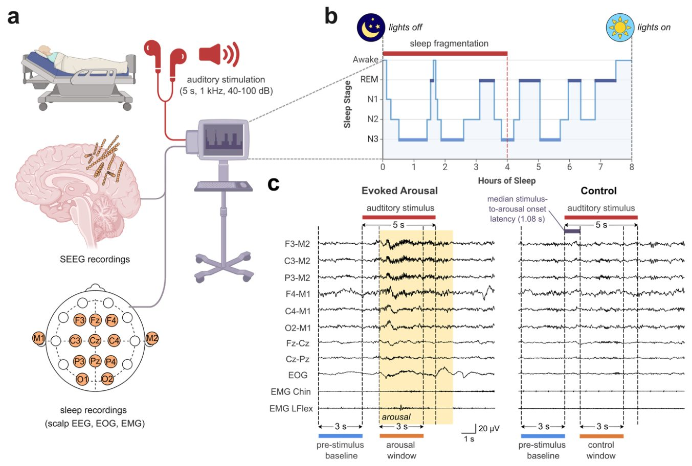
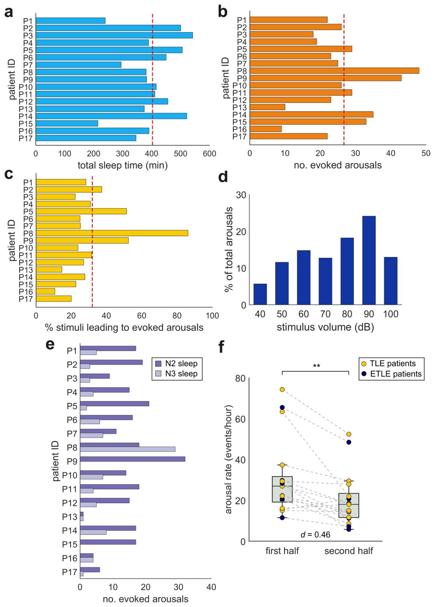
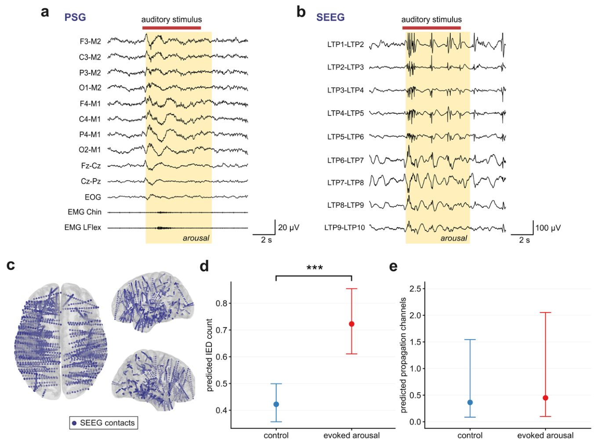
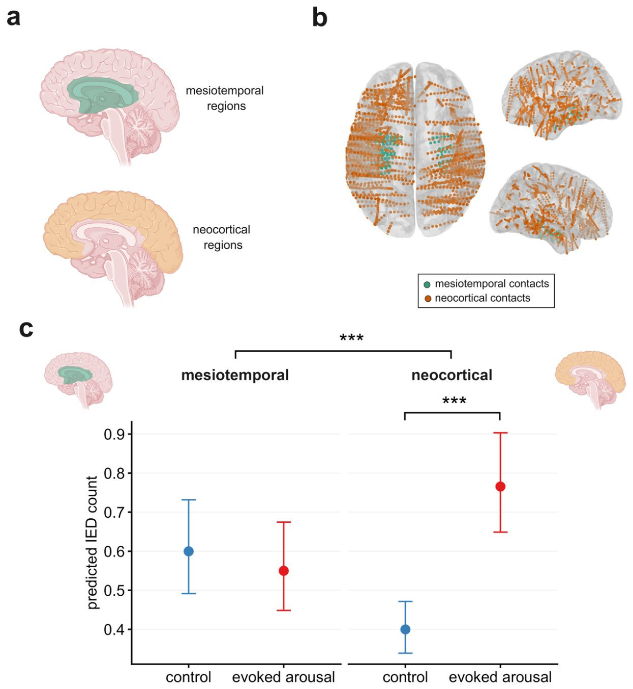
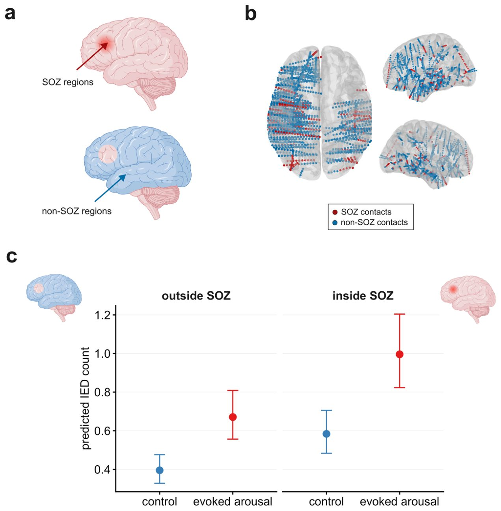
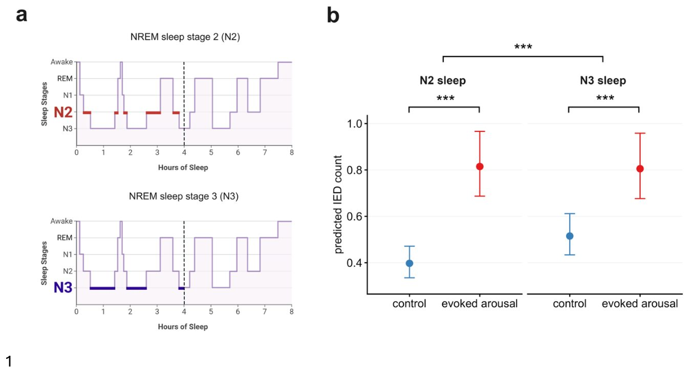
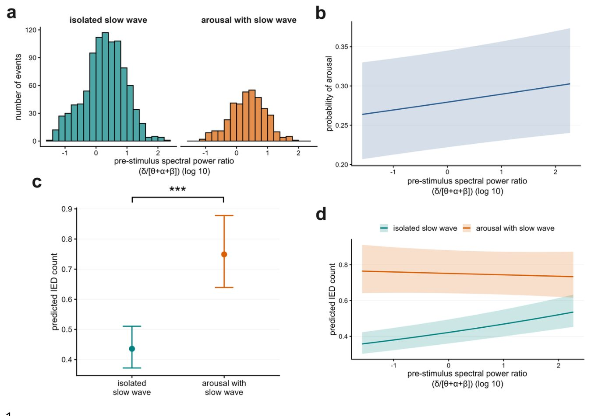
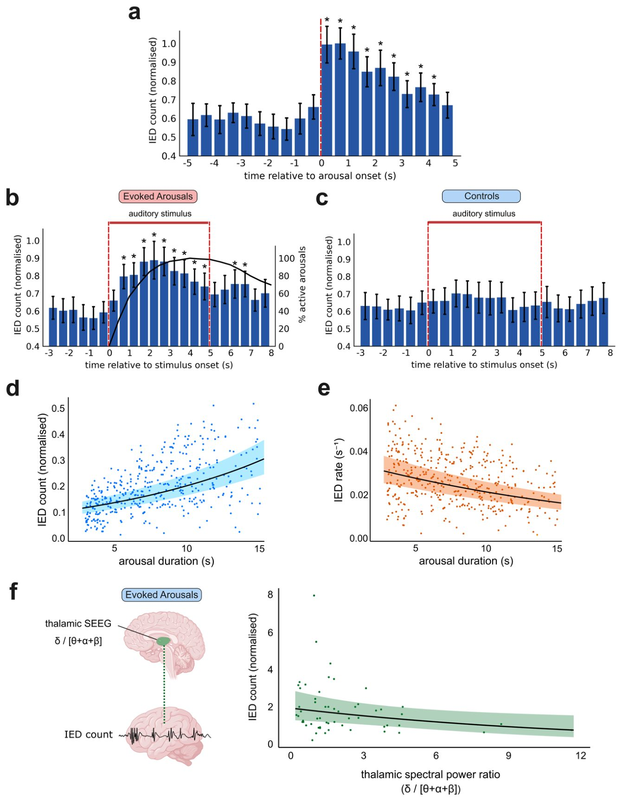

Үзілісті ұйқы мидағы эпилепсиялық дүмпулерді қалай қоздырады
{kind=link}

Түнгі ұйқының сапасы эпилепсиямен ауыратын адамдардың ми жұмысының тұрақтылығына тікелей әсер етеді. Дыбыс арқылы жасалған тәжірибелер әрбір қысқа ояну патологиялық разрядтардың өсуін тудыратынын көрсетті. Бұл ретте ұстама ошағы кеңеймейді, бірақ нашар ұйқы когнитивтік функцияларды нашарлатады.
Басты ойлар
- Ұйқыдағы микрооянулар эпилепсиялық разрядтардың санын күрт арттырады.
- Бұл әсер неокортексте және баяу ұйқының екінші сатысында айқын көрінеді.
- Жергілікті нейрон қозуы артады, бірақ разрядтар кеңге таралмайды.
Толығырақ
Зерттеушілер ұйқы тұрақсыздығы мен ұстамааралық эпилептиформдық разрядтардың (IED) өзара байланысын зерделеді. Ол үшін стереоэлектроэнцефалография (СЭЭГ, ми белсенділігін жіңішке электродтар арқылы тіркеу әдісі) пен полисомнография деректері біріктірілді. Дәрілік терапияға көнбейтін фокальды эпилепсиясы бар 17 пациент қатысқан сынақта түнгі ұйқының алғашқы сағаттарында 3-15 секундтық микрооянулар тудырылды.
Нәтижелер бұл жасанды оянулардың эпилептиформдық разрядтар санының күрт өсуіне әкелетінін көрсетті. Бұл әсер тек неокортексте және баяу ұйқының екінші мен үшінші сатыларында байқалды. Разрядтардың кеңістікте таралу ауқымы өзгермегенімен, жергілікті қозу күшейді. Бұл ұйқы тұрақтылығы мидың патологиялық белсенділігін бақылауда маңызды рөл атқаратынын дәлелдейді.
Шектеулер
Зерттеу ауыр дәрілік эпилепсиясы бар стационардағы пациенттердің шағын топтарында жүргізілді.
Мақаланың толық талдауы
Түйіндеме
Ұйқы мен эпилепсиялық белсенділік өзара күрделі байланыста, алайда адам миында патологиялық разрядтарды қоздыру мен реттеудегі ұйқы тұрақсыздығының себептік рөлі әлі де толық зерттелмеген. Авторлар мұны тікелей зерттей отырып, эпилепсиямен ауыратын науқастарда стереоэлектроэнцефалография және полисомнография жазбаларын біріктіре отырып, эксперименттік жолмен туындаған ұйқының микрооянулары мен ұстамааралық эпилепсиформдық разрядтар (IED) арасындағы жоғары дәлдіктегі уақытша байланысты сипаттады.
Зерттеу эпилепсиямен ауыратын науқастардан алынған стереоэлектроэнцефалография және полисомнография жазбаларын бірлесіп талдауға негізделген. Динамиканы бағалау үшін эксперименттік түрде туындатылған ұйқы микрооянуларының мидың түрлі анатомиялық аймақтары мен ұйқы сатыларындағы ұстамааралық эпилепсиформдық разрядтар жиілігіне уақытша тәуелділігін анықтау әдістері қолданылды. > [!tip] Стереоэлектроэнцефалография (сЭЭГ) — ми тіндерінің терең қабаттарына енгізілген электродтар арқылы электрлік белсенділікті тіркеу әдісі, ал полисомнография — ұйқы кезіндегі ми толқындарын, көз қозғалысын және бұлшықет тонусын кешенді зерттеу.
Ұйқы кезіндегі микрооянулар ұстамааралық эпилепсиформдық разрядтар жиілігінің жылдам өсуін туындатты, бұл ретте бұл әсер мидың анатомиялық аймағымен және нақты ұйқы сатысымен қатаң реттелді. Көрсеткіштердің өсуі тек неокортикалық аймақтармен шектеліп, N2 баяу толқынды ұйқы сатысында да, N3 сатысында да байқалды, сонымен қатар N2 сатысында үлкен әсер тіркелді. Айта кету керек, IED санының артуы ұстаманың басталу аймағы мен оны қоршаған аймақтар арасында ерекшеленген жоқ. Разрядтардың жалпы санының өскеніне қарамастан, микрооянулар олардың кеңістіктік таралуын өзгертпеді, бұл кеңірек эпилепсиялық желілерді тартпастан, жергілікті қыртыстық қозғыштықтың күшейетінін көрсетеді. > [!important] Ұйқыдағы микрооянулар неокортексте ұстамааралық эпилепсиформдық разрядтардың (әсіресе N2 сатысында) жылдам әрі жергілікті өсуіне әкеледі, бірақ олардың кеңістіктік таралу аймағын кеңейтпейді.
Алынған нәтижелер ұйқы тұрақсыздығының уақытша және кеңістіктік ауқымда патологиялық белсенділікті белсенді түрде қоздырудағы себептік рөлін дәлелдейді. Сондай-ақ олар ұйқыны тұрақтандыруды эпилепсиялық жүктемені азайту және ми қыртысы желілерінің жұмысын сақтау үшін перспективалы терапиялық стратегия ретінде көрсетеді. > [!warning] Бұл жұмыс фармакорезистентті эпилепсиясы бар науқастардың инвазивті деректеріне негізделген, сондықтан қорытындыларды басқа популяцияларға жеке ерекшеліктерді ескермей тарату сақтықты талап етеді.
Кіріспе
Эпилепсиямен ауыратын науқастардың жартысынан көбі ұйқының сапасыздығы, ұйқысыздық және күндізгі шамадан тыс ұйқышылдық сияқты ұйқы бұзылыстарына тап болады. Бұл мәселелер өмір сапасын төмендетіп қана қоймай, ұстамаларды қоздырады, ал түнгі ұстамалар эпилепсияға байланысты өлімнің негізгі себебі болып табылатын кенеттен болатын қауіпті жағдайдың (SUDEP) қаупін арттырады. Бұрынғы зерттеулер ұйқы тұрақсыздығы мен эпилепсиялық белсенділік арасындағы тығыз байланысты анықтады, әсіресе жылдам емес көз қозғалысы (NREM) ұйқысының тұрақсыздығы кезінде және ЭЭГ-дегі 3-15 секундқа созылатын микрооянулар кезінде эпилепсиялық белсенділік жиі байқалады. Циклдік ауыспалы өрнек (CAP) және тыныс алудың бұзылуы сияқты оянумен байланысты жағдайлар ұстамалардың көбеюімен байланыстырылды.тереоэлектроэнцефалографияны (SEEG) қолданған ішкі зерттеулер эпилепсиялық белсенділіктің ояну ауытқуларымен байланысты екенін, яғни неокортикалық аймақтарда микрооянулар басталғанға дейін және ояну кезінде интерictal эпилепсиялық разрядтардың (IED) жиілігі артатынын көрсетті. Сондай-ақ бұл белсенділік терең N3 фазасына қарағанда жеңіл N2 ұйқы фазасында жиірек кездеседі. Дегенмен, маңызды олқылықтар қалады: әдебиеттердің көпшілігі бақылау сипатында, бұл себеп-салдарлық байланыстарды анықтауды қиындатады, ал бас сүйек ЭЭГ фокальды немесе терең эпилепсиялық белсенділікті байқамай қалуы мүмкін.
Маңызды
Эпилепсиямен ауыратын науқастардың жартысынан көбі ұйқының бұзылуынан зардап шегеді, бұл ұстамалардың жиілеуі мен SUDEP қаупіне тікелей әсер етеді, бірақ ұйқы тұрақсыздығының әсерін дәлелдейтін эксперименталды зерттеулер жетіспеді.
Ұйқы тұрақсыздығы мен эпилепсияны зерттеудің эксперименталды тәсілі
Дәріге төзімді эпилепсиямен ауырып, хирургиялық операция алдындағы тексеруден өтіп жатқан науқастарда орындалатын стереоэлектроэнцефалография (SEEG) мидың терең құрылымдарына жоғары кеңістіктік-уақыттық ажыратымдылықпен қол жеткізуге мүмкіндік береді. Бас сүйек ЭЭГ, электромиография (ЭМГ) және электроокулографияны (ЭОГ) қамтитын полисомнографиямен (ПСГ) біріктіргенде, SEEG ұйқы тұрақтылығы мен эпилепсиялық белсенділік арасындағы уақытша динамиканы сипаттауға мүмкіндік береді. Бұл жұмыста авторлар дәріге төзімді фокальды эпилепсиясы бар науқастардың SEEG-ПСГ жазбаларын пайдалана отырып, ұйқы тұрақтылығын эксперименталды түрде басқарды. Микрооянуларды тудыру және ұйқы тұрақсыздығының бақыланатын ауытқуларын жасау үшін есту стимуляциясы қолданылды, содан кейін осы оқиғаларға дейін және олардың барысында IED саны мен таралуы салыстырылды. Бұл тәсіл адам миында IED пайда болуына оянумен байланысты ұйқы тұрақсыздығының тікелей әсерін бағалауға мүмкіндік берді. Интерictal желіге назар аудару желінің қоздырғыштығындағы шұғыл өзгерістерді анықтауға жоғары сезімталдық берді, өйткені IED сыртқы оқиғаларға дәл уақыт бойынша байланыстырылуы мүмкін.
Түсіндірме
Стереоэлектроэнцефалография (SEEG) — мидың терең құрылымдарына енгізілген электродтар көмегімен мидың электрлік белсенділігін тіркейтін инвазивті әдіс.
Оянулардың эпилепсиялық белсенділікке әсері
Зерттеушілер оянулар эпилепсиялық спайктарды күшейтіп, нейрондық желілердің жоғарылаған қозғыштығын көрсете отырып, олардың кеңірек таралуына ықпал етеді деген болжам жасады. Осы гипотезаны растай келе, ояну басталғаннан кейінгі кезеңдерде оянуға дейінгі кезеңдермен салыстырғанда ұстамааралық эпилептиформдық разрядтардың (IED) саны айтарлықтай өскені байқалды, бұл оянулардың эпилепсиялық динамикаға тікелей әсер ететінін көрсетеді.
Маңызды
Оянулар неокортексте және N2 пен N3 ұйқы сатыларында IED санының айтарлықтай өсуін тудырады, ең үлкен әсер N2 сатысында байқалады, ал разрядтардың кеңістікте таралуы өзгеріссіз қалады.
Авторлар сонымен қатар бұл әсердің мидың нақты аймағына, ұстаманың басталу аймағының (SOZ) қатысуына және ұйқы сатысына байланысты екенін талдады. Неокортекстегі спайктардың саны медиотемпоральды аймақтарға қарағанда көбірек болады деп болжанды, өйткені неокортекск пен ұйқыны реттеуде орталық рөл атқаратын таламус арасындағы функционалдық байланыстар күштірек. Сондай-ақ оянулар мен эпилепсиялық белсенділік арасындағы байланыс ең күшті болатын N2 ұйқы сатысында үлкен әсер күтілді. Алынған нәтижелер бұл гипотезаларды толығымен растады: неокортексте, сондай-ақ N2 және N3 ұйқы сатыларында IED санының өсуі тіркеліп, N2-де әсер басым болды, бұл таламокортикалық контурлар мен ұйқы сатылары динамикасының маңызды рөлін көрсетеді.
Түсіндірме
Ұстамааралық эпилептиформдық разрядтар (IED) — бұл эпилепсиясы бар адамдарда ұстамалар арасындағы аралықта электроэнцефалограммада тіркелетін ми белсенділігінің үлгілері.
Қызығы, оянуларға байланысты IED санының артуы ұстаманың басталу аймағы (SOZ) пен оны қоршаған тұлғалар арасында ерекшеленген жоқ, бұл SOZ-тің ояну тудырған қысқа мерзімді қоздырушы өзгерістерге таңдамалы түрде тартылмайтынын көрсетеді. IED жиілігіне әсерінен айырмашылығы, оянулар мұндай разрядтардың кеңістіктік таралуына әсер етпеді. Алынған деректердің жиынтығы ұйқы кезіндегі қысқа мерзімді оянулар IED таралуы үшін қажетті кеңірек желілік механизмдерді қоспастан, жергілікті кортикальды қозғыштықты таңдамалы түрде күшейтетінін және бұл байланыс мидың анатомиялық аймағы мен ұйқы сатыларына тәуелді екенін көрсетеді.
Абайлаңыз
Бақылаулар стационарлық мониторинг жағдайында дәрі-дәрмекке төзімді эпилепсиясы бар науқастардың қысқа мерзімді микробөліністеріне қатысты, бұл қорытындыларды эпилепсияның барлық түрлеріне қолдануда сақтықты талап етеді.
Осылайша, бұл жұмыс ұйқы кезіндегі оянулар мен эпилепсиялық белсенділіктің жергілікті модуляциясы арасындағы байланыстың тікелей дәлелдерін ұсынады. Бұл ми жағдайының қысқа мерзімді ауытқулары эпилепсиялық динамикаға қалай әсер ететінінің қолданыстағы модельдерін нақтылауға көмектеседі және ұйқы тұрақтылығын адам миындағы патологиялық белсенділікті анықтайтын негізгі фактор ретінде атап көрсетеді.
Нәтижелер
Есту стимуляциясы эпилепсиямен ауыратын науқастарда ұйқының фрагментациясы мен микрооянуларды туындатады
Ұйқы кезінде жасанды түрде туындаған микрооянулардың ұстамааралық белсенділікке әсерін бағалау үшін зерттеушілер алдымен өздері әзірлеген дыбыстық стимуляция хаттамасы пациенттерде ояну мен ұйқының фрагментациясын сенімді түрде қоздыратынына көз жеткізді. Зерттеуге фармрезистентті фокальды эпилепсиясы бар n = 17 науқас қатысты, оларға түнде стереоэлектроэнцефалография және полисомнография (SEEG-PSG) тіркеу жұмыстары жүргізілді. Түннің алғашқы төрт сағат ішінде тұрақты баяу ұйқы фазасында (NREM) әртүрлі қарқындылықтағы дыбыс сигналдары берілді. Бұл тексерілген әдіс пациентті толық оятпастан микрооянулар жиілігін арттыруға бағытталған және PSG деректері негізінде нақты уақыт режимінде бақыланды (1-сурет).
Қатысушылардың жалпы ұйқы уақыты (TST) орта есеппен 400.9 ± 89.9 мин құрады (ауқымы 214.5–542.0 мин) (2a-сурет, клиникалық мәліметтер S1-кестеде келтірілген). Дыбыстық әсер жалпы есеппен 440 туындаған микрооянуды тудырды, бұл бір қатысушыға орта есеппен 25.9 ± 9.8 оқиғаға сәйкес келеді (ауқымы 9–48) (2b-сурет). Берілген дыбыс сигналдарының орта есеппен 31.6 ± 17.2% (ауқымы 10.7–86.2\%) сәтті түрде оянуларды туындатты (2c-сурет). Бұл ретте 90 дБ дыбыс қаттылығы ең көп қолданылды (2d-сурет), алайда дыбыс қарқындылығына реакция әртүрлі пациенттерде әрқалай болды (S1-сурет).
Түсіндірме
> Полисомнография (PSG) және стерео-ЭЭГ (SEEG) — мидың электрлік белсенділігі мен ұйқы көрсеткіштерін тіркеудің кешенді әдістері, олар ұйқы құрылымы мен ояну сәттерін дәл қадағалауға мүмкіндік береді.
Туындаған микрооянулардың орташа ұзақтығы 7.8 ± 3.3 с құрады (ауқымы 3–15 с) (S2a-сурет). Олар терең N3 ұйқы фазасына (5.2 ± 6.4, ауқымы 0–29) қарағанда N2 сатысында (14.7 ± 7.0, ауқымы 1–32) жиірек байқалды (2e-сурет). Айта кетерлік жайт, жалпы ояну жиілігі — дыбыстық стимуляцияға тәуелсіз пайда болатын спотанды оянуларды қоса алғанда — стимуляция жүргізілген түннің бірінші жартысында (27.0 ± 9.5 оқиға/сағат [медиана және квазиаралық ауқым], ауқымы 11.5–74.3 оқиға/сағат) екінші жартысымен салыстырғанда (18.0 ± 10.2 оқиға/сағат, ауқымы 5.8–52.4 оқиға/сағат) айтарлықтай жоғары болды (Вилкоксонның таңбалы рангтер тесті, p = 0.00118, Клифф d = 0.46, n = 17, 2f-сурет). Алынған нәтижелер таңдалған есту стимуляциясы әдісі осы топтағы ұйқының фрагментациясын тиімді түрде күшейткенін растайды.
Маңызды
> 17 эпилепсия науқасында ұйқы кезіндегі есту стимуляциясы әр адамға орта есеппен 25.9 ± 9.8 микрооянуды тудырып (стимулдардың 31.6%), түннің бірінші жартысында ұйқының фрагментациясын едәуір арттырды (27.0 пен 18.0 оқиға/сағат, p = 0.00118).
Қоздырылған оянулар интериктальды эпилептиформды разрядтардың санын жедел түрде арттырады, бірақ олардың кеңістіктік таралуын арттырмайды
Зерттеу барысында дыбыстық стимуляция арқылы туындаған ұйқының қысқа мерзімді оянуларының эпилепсиялық белсенділікке әсері бағаланды. Приступ аралық эпилептиформдық разрядтар (IED) валидацияланған детектор көмегімен биполярлы SEEG арналарында тіркелді. Талдауда қолданылған SEEG арналарының медиандық саны 2-ні құрады (интерквартильдік қашықтық, IQR 5; ауқымы 1–135) (S2b-сур.); пациенттердің түндегі IED жиілігі бойынша жалпы деректер S2-кестеде келтірілген. IED саны төрт жағдай бойынша 3 секундтық кезеңдерде есептелді: оянуды тудырған стимулдар үшін стимулға дейінгі және оянудан кейінгі терезелер, сондай-ақ оянуды тудырмаған дыбыстық стимулдар үшін бақылау терезелері (1c-сур.). Ояну мен бақылау жағдайларын салыстыру дыбыс әсерінен тәуелсіз түрде оянудың жергілікті разрядтарға тигізетін тікелей әсерін бөліп алуға мүмкіндік берді. Стимулға дейінгі кезеңдердің бастапқы деңгейді көрсететініне көз жеткізу үшін олар жалпыланған сызықтық аралас модельдер (GLMM) арқылы түн бойы кездейсоқ таңдалған оянусыз кезеңдермен салыстырылды. Айтарлықтай айырмашылықтар анықталған жоқ (GLMM, β-бағалау ± стандартты қате (SE): -0.052 ± 0.027, P = 0.053, S3-сур.).
Жағдайлар арасындағы приступ аралық спайк белсенділігінің өзгеруін анықтау үшін бастапқы IED деңгейі мен стимул қарқындылығы ескеріліп, GLMM қолданылды (n = 17 пациент, 3-сур.). Талдау жағдайдың айтарлықтай әсерін көрсетті: ояну кезінде болжанған IED саны бақылау көрсеткіштеріне қарағанда айтарлықтай жоғары болды (GLMM, β-бағалау ± SE: 0.537 ± 0.012, оқиғалар жиілігінің қатынасы (IRR) = 1.71, p < 0.0001), бұл бақылаумен салыстырғанда IED санының 71%-ға өскенін білдіреді (3d-сур.). Эпилепсия түрі және МРТ мәртебесі бойынша қосымша топтастырулар барлық топтарда ұқсас трендті көрсетті (S4-сур.). Стимул қарқындылығы ескеріліп, ояну алдындағы кезеңдер салыстырылған кезде айтарлықтай айырмашылықтар табылған жоқ (GLMM, β-бағалау ± SE: 0.019 ± 0.014, IRR = 1.02, P = 0.182, S5-сур.).
Маңызды
Туындаған оянулар приступ аралық эпилептиформдық разрядтардың санын 71%-ға (IRR = 1.71, p < 0.0001) және жоғары жиілікті тербелістерді 70%-ға арттырады, бірақ олардың кеңістіктік таралуына әсер етпейді.
Түсіндірме
SEEG (стереоэлектроэнцефалография) — мидың терең құрылымдарына электродтар енгізу арқылы оның электрлік белсенділігін тіркейтін инвазивті әдіс.
Спонтанды оянулар да IED санының біршама, бірақ маңызды өсуімен қатар жүрді (GLMM, β-бағалау ± SE: 0.046 ± 0.010 SE, IRR = 1.05, p < 0.0001, S6a-сур.). Жоғары жиілікті тербелістер (HFO) де зерттеліп, олардың болжанған саны ояну кезінде айтарлықтай жоғары екені анықталды (GLMM, β-бағалау ± SE: 0.530 ± 0.014, IRR = 1.70, p < 0.0001, S7-сур.), бұл IED үлгісін қайталай отырып, 70% өсімді көрсетті. Бұл нәтижелер оянулардың эпилепсиялық белсенділікті күрт күшейтетінін дәлелдейді.
Содан кейін зерттеушілер туындаған оянулардың IED санына ғана емес, сонымен қатар олардың кеңістіктік таралуына әсер ететінін тексерді (n = 17). Таралу арнасы ретінде бастапқы IED-тен 120 мс ішінде тіркелген кез келген SEEG арнасы есептелді. Таралу арналарының саны GLMM көмегімен модельденді. IED санына тигізетін әсерінен айырмашылығы, таралу арналарының саны оянулар мен бақылау жағдайлары арасында айтарлықтай ерекшеленген жоқ (GLMM, β-бағалау ± SE: 0.212 ± 0.408 SE, IRR = 1.24, P = 0.604, 3e-сур.). Спонтанды оянулар да таралу арналарының саны бойынша айтарлықтай айырмашылық көрсетпеді (GLMM, β-бағалау ± SE: 0.109 ± 0.317 SE, IRR = 1.12, P = 0.733, S6b-сур.). Демек, оянулар жергілікті қоздырғыштықты арттырып, приступ аралық белсенділікті күшейткенімен, кең ауқымды эпилепсиялық желілерді белсендіре алмайды.
Жалпы интериктальды спайктану стимуляция арқылы туындаған ұйқының фрагментациясы кезінде жоғарылайды
Зерттеушілер одан әрі оянудың жедел әсерлері эпилепсиялық ұстамалар арасындағы разрядтарға (IED) ұзақ уақыт аралығында әсер ететінін тексөрді. Ол үшін олар NREM ұйқы фазасы кезіндегі пациенттер деңгейіндегі жаһандық IED жиілігін салыстырды: түнгі уақыттың бірінші жартысында дыбыстық стимуляция ұйқының фрагментациясын тудырса, екінші жартысында қалпына келетін ұйқыға мүмкіндік беру үшін стимуляция тоқтатылған болатын. Стимуляция арқылы туындаған ұйқы фрагментациясы кезінде нормаланған IED жиілігі едәуір жоғары болды (0.80 ± 0.56 оқиға/мин, медиана және интерквартильдік ауқым, диапазон 0.32–1.50 оқиға/мин), стимуляциясыз кезеңдермен салыстырғанда (0.72 ± 0.48 оқиға/мин, диапазон 0.25–1.44 оқиға/мин) (Уилкоксонның таңбалы рангтер тесті, p = 0.017, Клифф d = 0.15, n = 17, 8a-Сурет).
Маңызды
Дыбыстық стимуляция тудырған ұйқы фрагментациясы түн бойы ұстамааралық разрядтар жиілігінің жалпы өсуіне әкеледі (0.80 қарсы 0.72 оқиға/мин, p = 0.017).
Бұл заңдылық түн бойы кездейсоқ таңдалған оянусыз 3 секундтық базалық кезеңдерді талдау арқылы да расталды: стимуляция кезіндегі нормаланған IED саны стимуляция жоқ кезеңдерге қарағанда айтарлықтай жоғары болды (GLMM, β-бағалау ± стандартты қате: -0.112 ± 0.003, жиілік қатынасы = 0.89, p < 0.0001, 8b-Сурет). Бұл дыбыстық стимуляция тоқтатылған кезде IED санының 10.6%-ке төмендеуіне сәйкес келеді. Алынған нәтижелер дыбыстық стимуляция хаттамасы туындатқан ұйқы макроқұрылымының бұзылуы тікелей ояну терезесінен тыс ұзақ уақыт аралығында жаһандық IED белсенділігінің күшеюімен байланысты екенін көрсетеді.
Ояну арқылы туындайтын интериктальды спайктану анатомиялық аймаққа тәуелді
Әрі қарай ғалымдар оянудан туындаған IED өсуі нақты анатомиялық аймаққа байланысты ма екенін анықтады. Ол үшін олар мезиотемпоральды SEEG контактілерінде (соның ішінде гиппокамп, парагиппокампальды қатпар, энторинальды қыртыс және бадамша дене) пайда болатын IED разрядтарын неокортекстегі разрядтармен салыстырды (4a, b-Сурет). Бұл салыстыру ұйқыны реттеудегі маңызды құрылым болып табылатын таламуспен әр түрлі механизмдер арқылы байланысқан мезиотемпоральды және неокортикальды аймақтардың жауабында айырмашылық бар-жоғын тексеруге мүмкіндік берді.
Талдау үшін зерттеушілер GLMM көмегімен әр арна-эпоха үшін IED санын модельдеді. Жағдай (туындаған ояну мен бақылау), анатомиялық аймақ (мезиотемпоральды және неокортикальды) және олардың өзара әрекеттесуі тұрақты әсерлер ретінде қарастырылды. Талдау жағдай мен анатомиялық аймақ арасында айтарлықтай өзара әрекеттесу бар екенін көрсетті (GLMM, β-бағалау ± SE: 0.737 ± 0.041, IRR = 2.09, p < 0.0001, 4c-Сурет).
Маңызды
Туындаған оянулар неокортексте IED-тің күрт өсуін тудырады (+92%, p < 0.0001), ал мезиотемпоральды аймақтарда айтарлықтай өзгерістер байқалмайды (p = 0.054).
≥ 3 мезиотемпоральды арнасы бар пациенттерде (n = 14) постхок-контрасттар мезиотемпоральды аймақтардағы болжанған IED саны туындаған оянулар мен бақылау арасында айтарлықтай ерекшеленбейтінін көрсетті (β-бағалау = -0.087 ± 0.039, IRR = 0.92, P = 0.054, 4c-Сурет). Керісінше, неокортексте (n = 17 пациент) бақылаумен салыстырғанда туындаған оянулар кезінде болжанған IED санының 92%-ке айтарлықтай өскені байқалды (β-бағалау = 0.650 ± 0.013, IRR = 1.92, p < 0.0001, 4c-Сурет).
Бұл аймақтық таңдамалылықтың спонтанды оянуларға да қатысты екенін бағалау үшін авторлар осындай GLMM құрылымын қолданды (9-Сурет). Алайда, туындаған оянулардан айырмашылығы, спонтанды оянулар бақылауға қарағанда мезиотемпоральды аймақтарда болжанған IED санының 27%-ке айтарлықтай төмендеуімен (β-бағалау = -0.320 ± 0.028, IRR = 0.73, p < 0.0001) және неокортексте 14%-ке шамалы өсуімен қатар жүрді (β-бағалау = 0.135 ± 0.011, IRR = 1.14, p < 0.0001).
Жоғары жиілікті осцилляциялар (HFO) үшін де осындай талдау жүргізіліп, туындаған оянулар үшін маңызды өзара әрекеттесу анықталды (GLMM, β-бағалау = 0.664 ± 0.050, IRR = 1.94, p < 0.0001, 10-Сурет). Мезиотемпоральды HFO санында бақылаумен айтарлықтай айырмашылық болмады (β-бағалау = -0.054 ± 0.048, IRR = 0.95, P = 0.511), ал неокортексте 84%-ке айтарлықтай өсім байқалды (β-бағалау = 0.610 ± 0.015, IRR = 1.84, p < 0.0001). Қорытындылай келе, оянумен байланысты ұстамааралық белсенділік тек неокортексте басым түрде артады, ал мезиотемпоральды аймақтар өзгеріссіз қалады.
Оянумен байланысты ұстама аралық спайк белсенділігі ұстаманың басталу аймағымен реттелмейді
Зерттеушілер содан кейін ояну тудырған ұстама аралық эпилептиформды белсенділіктің (IED) өсуі стереоэлектроэнцефалография (SEEG) контактілері арасында ұстаманың басталу аймағының (SOZ) ішінде және сыртында ерекшеленетінін тексерді (5a, b-сур.). SOZ ұстама басталған кездегі ең ерте электрографиялық өзгерістер негізінде клиникалық түрде анықталды. Бұл салыстыру SOZ функционалдық электрографиялық құрылым ретінде оянуларға айналадағы аймақтарға қарағанда басқаша жауап беретінін немесе бұл өзгерістерге төзімді болып қалатынын анықтауға мүмкіндік берді. Кем дегенде n = 3 SEEG арнасында айқын клиникалық SOZ бар пациенттер үшін (n = 12) арна-эпоха başına IED саны жалпыланған сызықтық аралас модель (GLMM) арқылы модельденді. Шарт (туындатылған ояну және бақылау), SOZ күйі (SOZ сыртында және ішінде) және олардың өзара әрекеттесуі тіркелген әсерлер ретінде ескерілді, ынталандыруға дейінгі бастапқы IED саны мен стимул қарқындылығы түзетілді, сондай-ақ пациентке орнатылған SEEG контактілері үшін кездейсоқ қиылысулар қосылды.
Түсіндірме
> GLMM (жалпыланған сызықтық аралас модель) және IRR (жиіліктер қатынасы) — пациенттердің жеке ерекшеліктерін ескере отырып, күрделі медициналық деректерді талдау әдістері.
Талдау шарт пен SOZ күйі арасында елеулі өзара әрекеттесудің жоқтығын көрсетті (GLMM, β бағалауы ± SE: 0.005 ± 0.026, IRR = 1.00, P = 1.00, 5-сур.). Бұл туындатылған оянулардың IED санына әсері SOZ және SOZ емес аймақтар арасында айтарлықтай ерекшеленбегенін білдіреді. Өзара әрекеттесудің болмауына байланысты кейінгі салыстырулар жеке жүргізілген жоқ.
Спонтанды оянулар да шарт пен SOZ күйі арасында елеулі өзара әрекеттесуді көрсетпеді (GLMM, β бағалауы = -0.025 ± 0.021, IRR = 0.98, P = 0.940, SN 11-сур.). Жоғары жиілікті тербелістер (HFO) үшін де осындай заңдылық байқалды: туындатылған оянулар кезінде шарт пен SOZ күйі арасында елеулі өзара әрекеттесу болмады (GLMM, β бағалауы = -0.056 ± 0.030, IRR = 0.95, P = 0.239, SN 12-сур.). Бұл нәтижелер оянуға байланысты IED мен HFO қоса алғандағы ұстама аралық белсенділіктің өсуі SOZ ішінде де, сыртында да бірдей болатынын көрсетеді.
Маңызды
> Ұстаманың басталу аймағы (SOZ) ояну кезіндегі эпилепсиялық жарқылдардың (IED және HFO) өсуін басқармайды — бұл өсім ми бойымен біркелкі жүреді (P = 1.00).
Оянуға байланысты ұстама аралық белсенділік ұйқы сатысына тәуелді
Содан кейін ғалымдар оянулардың IED-ке әсері олардың орын алатын ұйқы сатысына байланысты екенін зерттеді. Олар нейрондық синхронизация мен кортикальды қоздырғыштықтың әртүрлі деңгейлерін көрсететін 2-ші (N2) және 3-ші (N3) баяу толқынды ұйқы кезіндегі оянуларды салыстырды (6a-сур.). N2 ұйқы ұршықтары мен К-комплекстерімен сипатталатын жеңіл саты болса, N3 жоғары амплитудалы, төмен жиілікті (0.5-2 Гц) дельта белсенділігімен және төмендеген кортикальды жауаппен ерекшеленеді. Ұқсас GLMM моделін қолдана отырып, шарт, ұйқы сатысы және олардың өзара әрекеттесуі бағаланды, сондай-ақ бастапқы IED саны мен стимул күшіне түзетулер жасалды. Нәтижесінде шарт пен ұйқы сатысы арасында айтарлықтай өзара әрекеттесу бары анықталды (GLMM, β бағалауы ± SE: -0.271 ± 0.031, IRR = 0.76, p < 0.0001, 6b-сур.).
Атап айтқанда, туындатылған оянуға байланысты IED санының өсуі N3 сатысында N2 сатысына қарағанда шамамен 24% аз болды. Кейιнгі салыстырулар болжамды IED саны бақылаумен салыстырғанда N2-де де (n = 16 пациент; β = 0.718 ± 0.017, IRR = 2.05, p < 0.0001, 6b-сур.), N3-те де (n = 13 пациент; β = 0.447 ± 0.026, IRR = 1.56, p < 0.0001, 6b-сур.) оянулар кезінде айтарлықтай жоғары екенін көрсетті, бірақ бұл өсім N2-де үлкенірек болды.
Абайлаңыз
> Жасанды туындатылған және табиғи спонтанды оянулардың ұйқы сатыларына қатысты әсерлері қарама-қайшы болуы мүмкін.
Спонтанды оянулар үшін де шарт пен ұйқы сатысы арасында елеулі өзара әрекеттесу табылды (GLMM, β бағалауы = 0.089 ± 0.029, IRR = 1.09, P = 0.0075, SN 13-сур.). Болжамды IED саны бақылауға қарағанда N2-де де (β = 0.143 ± 0.015, IRR = 1.15, p < 0.0001), N3-те де (β = 0.232 ± 0.025, IRR = 1.26, p < 0.0001) жоғары болды. Айта кетерлік жайт, спонтанды оянуларда IED санының өсуі N3-те N2-ге қарағанда 10% артық болды, бұл туындатылған оянуларға қарама-қайшы келеді.
HFO үшін де туындатылған ояну нәтижелеріне ұқсас жағдай байқалды: шарт пен ұйқы сатысы арасында елеулі өзара әрекеттесу бар (GLMM, β бағалауы = -0.275 ± 0.036, IRR = 0.76, p < 0.0001, SN 14-сур.). Болжалды HFO саны N2 (n = 16, β = 0.758 ± 0.020, IRR = 2.13, p < 0.0001) және N3-те (n = 13, β = 0.483 ± 0.030, IRR = 1.62, p < 0.0001) бақылауға қарағанда жоғары болып, N3-тегі өсім N2-ге қарағанда 24% аз болды.
Маңызды
> Оянулар эпилепсиялық белсенділікті N2 және N3 ұйқы сатыларында да күшейтеді, бірақ туындатылған оянуларда бұл өсім N3-те 24% аз болса, спонтанды оянуларда керісінше, N3-те 10% артық болады.
Қорытындылай келе, оянулар N2 және N3 ұйқы сатыларында эпилепсиялық белсенділікті арттырады, бірақ бұл әсердің салыстырмалы шамасы ұйқы сатысына байланысты. Туындатылған оянулар кезінде бұл әсер N3-ке қарағанда N2-де айтарлықтай үлкен болды, бұл N2 сатысының жоғары кортикальды қоздырғыштық күйін көрсетеді. Қызығы, бұл заңдылық спонтанды оянулар үшін керісінше болды.
Стимулға жауап түрі мен стимул алдындағы дельта-белсенділіктің интерiktалды спайктарға әсері
Авторлар ояну кезіндегі эпилептиформды разрядтардың (IED) көбеюі тікелей оянудың өзімен немесе ілеспе баяу толқынды жауаппен байланысты екенін, сондай-ақ стимул алдындағы фоновое дельта-белсенділік электрфизиологиялық жауапқа әсер ететінін тексерді. Зерттеу IED өсуі тек қана жылдам оянуларға тән бе, әлде баяу тербелістердің стимул кезіндегі жалпы тұрақсыздығын көрсете ме деген сұраққа жауап берді. Бұл үшін жалпыланған сызықтық аралас модельдер (GLMM) қолданылды. Талдауға 17 пациент кірді, өйткені ЭЭГ-жауабы байқалмаған стимулдар тек 4 пациентте ғана кездесіп, шығарып тасталды. Стимул алдындағы спектрлік қуат қатынасы (δ / [θ + α + β], жиіліктері 0.5--4 Гц және 4.5--30 Гц) басты әсер ретінде бағаланды, мұнда стимул қарқындылығы мен бастапқы IED саны ескерілді, ал пациенттер ішіндегі SEEG контактілері үшін кездейсоқ қиылысулар енгізілді. Бұл қуат көрсеткішінің таралуы екі жауап түрі үшін де ұқсас болды (7a-сур.), бұл статистикалық тұрғыдан расталды: стимул алдындағы спектрлік қатынас ояну ықтималдығына әсер етпеді (GLMM, бағалау ± SE: 0.032 ± 0.014, P = 0.052, 7b-сур.).
Түсіндірме
GLMM (жалпыланған сызықтық аралас модель) — пациенттер мен контактілердің жеке ерекшеліктерін де, жалпы тенденцияларды да бір мезгілде ескеретін күрделі статистикалық талдау әдісі.
Содан кейін GLMM көмегімен жауап түрінің IED санына әсері және дельта-белсенділіктің бұл байланысты реттеуші ретіндегі рөлі бағаланды. Модельге жауап түрі (оқшауланған баяу толқын және баяу толқынды ояну), дельта-қуат көрсеткіші және олардың өзара әрекеттесуі кіргізілді. Баяу толқынды оянулар оқшауланған баяу толқындармен салыстырғанда айтарлықтай жоғары IED санын көрсетті (GLMM, бағалау ± SE: 0.542 ± 0.012, IRR = 1.72, p < 0.0001, 7c-сур.), бұл IED санының 72%-Fез өсуіне сәйкес келеді. Жауап түрі мен дельта-қатынас арасындағы өзара әрекеттесу де маңызды болды (GLMM, бағалау \pm SE: -0.073 \pm 0.013, IRR = 0.93, p < 0.0001$, 7d-сур.), яғни дельта-белсенділік пен IED саны арасындағы байланыс жауап түріне тәуелді болды. Қосымша сараптау нәтижесінде оқшауланған баяу толқыннан кейін жоғары дельта-қуат үлкен IED санымен байланысты екені анықталды (бағалау = 0.066 ± 0.009, IRR = 1.07, p < 0.0001, 7d-сур.), бұл дельта-көрсеткіштің әрбір бірлік өсуіне IED-тің 7% көбеюін береді. Керісінше, оянудан кейін бастапқы дельта-белсенділік пен IED саны арасында байланыс байқалмады (бағалау = -0.007 ± 0.012, IRR = 0.99, P = 1, 7d-сур.). Демек, фоновое дельта-күйі тек ояну болмаған жағдайда ғана спайктарды күшейтеді, ал ояну басталған кезде қосымша әсер етпейді.
Маңызды
Оянулар оқшауланған баяу толқындармен салыстырғанда IED санының 72% өсуіне әкеледі (IRR = 1.72, p < 0.0001), ал бастапқы дельта-белсенділік тек ояну болмаған кезде ғана спайктерді арттырады.
Дельта-белсенділіктің араласушы фактор (конфаундер) еместігін тексеру үшін сезімталдық талдауы жүргізілді. Дельта-қуат көрсеткіші қосылған модель (GLMM, бағалау ± SE: 0.537 ± 0.012, IRR = 1.71, p < 0.0001) түзетілмеген модельмен (GLMM, бағалау ± SE: 0.538 ± 0.012, IRR = 1.71, p < 0.0001) салыстырғанда жауап түрінің IED-ке әсерін өзгертпеді. Сонымен қатар, дельта-қуат қатынасы түзетілген модельде IED санының дербес болжаушысы болмады (бағалау = 0.009 ± 0.005, IRR = 1.01, P = 0.081). Бұл стимул алдындағы дельта-белсенділік басты бұрмалаушы фактор емес екенін көрсетіп, стимулдан кейінгі эпилептиформды белсенділіктің негізгі қозғаушы күші ретінде мидың фоновое күйін емес, жауап түрін растайды.
Стимул қарқындылығының ұстама аралық разрядтар жиілігіне әсері
Стимул қарқындылығының өзі ұстама аралық разрядтардың (IED) санын анықтауы мүмкін деген болжамды жоққа шығару үшін, авторлар дыбыстық стимулдар сезілетін ояну реакциясын тудырмаған бақылау кезеңдерін талдады. Мұндай бақылау кезеңдерінде стимул қарқындылығы IED санының шағын, бірақ статистикалық маңызды өсуімен байланысты болды (жалпыланған сызықтық аралас модель немесе GLMM, β-коэффициент ± SE: 0.0056 ± 0.0005, жиіліктер қатынасы IRR = 1.006, p < 0.0001, Сурет 15a): стимул қарқындылығының әр 1 дБ артуына IED 0.6% өсуі сәйкес келді.
Маңызды
Бақылау кезеңіндегі әр 1 дБ үшін 0.6% шағын өсім ояну кезіндегі ауқымды өзгерістерді түсіндіре алмайды, өйткені олардың өзара әрекеті статистикалық тұрғыдан маңызды емес.
Алайда, оқиға түрі (туындаған ояну және бақылау) мен стимул қарқындылығы арасындағы өзара әрекет ету маңызды болмады (GLMM, β-коэффициент ± SE: -0.0004 ± 0.0006, IRR = 1.00, P = 0.514, Сурет 15b). Бұл туындаған оянулар кезінде байқалатын IED үлкен өсімі дыбыс қаттылығына тәуелсіз болатын бөлек күйдің өзгеруін көрсететінін дәлелдейді. Сонымен қатар, таламусына SEEG электродтары орнатылған пациенттерде (n = 4 адам) бақылау кезеңдерінде стимул қарқындылығы таламустың спектrлік қуат қатынасының ауытқуларымен байланысты болмады (GLMM, β-коэффициент ± SE: -0.008 ± 0.009, P = 0.382, Сурет 15c).
Түсіндірме
GLMM (жалпыланған сызықтық аралас модель) — топтық үрдістермен қатар әр пациенттің жеке ерекшеліктерін ескеретін күрделі статистикалық талдау әдісі.
Жинақтай келгенде, бұл нәтижелер бақылау кезеңдерінде IED шағын, қарқындылыққа тәуелді өсуі байқалғанымен (полисомнограммада көрінбейтін шектік деңгейден төмен оянуларға байланысты), бұл әсер нақты оянулар кезінде тіркелген қуатты эпилептиформды белсенділіктің күрт өсуін түсіндіре алмайтынын көрсетеді.
Ояну кезіндегі интериктальды белсенділіктің уақытша динамикасы
Қысқа мерзімді оянулар кезінде интериктальды эпилептиформдық разрядтардың (IED) қалай артатынын анықтағаннан кейін, зерттеушілер бұл құбылыстың уақытша динамикасын талдады. Ғалымдар IED саны мен уақыты ояну ұзақтығына байланысты ма, және бұл өсімдер оянудың басталуына қатаң түрде қатысты ма, әлде бүкіл ояну кезеңі бойына тарала ма деген сұрақтарды зерттедi. Ол үшін 17 пациенттің IED таралуын ояну мен дыбыстық стимулдың басталуына қатысты талдады, көрсеткіштер әр пациенттің максималды мәніне нормаланып, 500 миллисекундтық интервалдарға (биндерге) біріктірілді (8a-c сурет). Ояну алдындағы бастапқы деңгеймен салыстырғанда, IED жиілігі ояну басталғаннан кейін бірден күрт өсіп, оянудан кейінгі 4.5 секунд ішінде жоғары деңгейде сақталды (бір жақты Манн-Уитни тесттері, p < 0.05, 8a сурет), бұл көрсеткіш ояну басталғаннан кейін 0.5–1 секунд өткенде шыңына жетті. Пациенттер бойынша IED нормаланған таралуы разрядтардың ояну кезеңінің басында шоғырлануға бейім екенін көрсетті, бұл қыртыстық қозғыштықтың ояну басталған сәтте күрт артып, кейін тұраάатынын білдіреді (16-қосымша сурет). Дыбыстық стимулдарға қатысты есептегенде де, IED ояну кезінде айтарлықтай көбейіп, стимулдан кейін шамамен 2–2.5 секундта ең жоғары шыңына жетті (бір жақты Манн-Уитни тесттері, p < 0.05, 8b сурет). Уақыт өте келе белсенді оянулардың үлесі бұл үлгіні дәл қайталап, ояну мен IED өсуі арасында тығыз уақытша байланыс бар екенін көрсетті. Керісінше, ояну тудырмайтын бақылау дыбыстық стимулдары кезінде IED белсенділігінде ешқандай айтарлықтай өзгеріс байқалмады (бір жақты Манн-Уитни тесттері, p > 0.05, 8c сурет), бұл байқалған өсудің кәдімгі дыбысқа емес, оянуға байланысты қыртыстық белсенділікке тән екенін растады.
Түсіндірме
> Бинтер — бұл деректерді есептеу және графиктерді құру үшін зерттеушілер үздіксіз ағынды бөліктерге (мысалы, 500 миллисекундтық аралықтарға) бөлетін уақыт кесінділері.
Ояну ұзақтығы мен интериктальды белсенділік арасындағы байланысты бағалау үшін авторлар 17 пациенттің барлық оянулары мен олармен байланысты IED деректерін біріктіріп, жалпыланған сызықтық аралас модельдерді (GLMM) қолданды. Мұнда ояну ұзақтығы тәуелсіз айнымалы, ал нормаланған IED саны немесе жиілігі тәуелді айнымалы ретінде алынды. Белгілі болғандай, ояну ұзақтығының артуымен жалпы IED саны айтарлықтай өскен (GLMM, бета коэффициентінің бағасы ± стандартты қате: оянудың әрбір 1 секундқа ұзаюымен IED саны 0.078 ± 0.006-ға артқан, p < 0.0001, 8b сурет). Бұл ұзағырақ оянулар жалпы алғанда көбірек интериктальды белсенділікті қамтитынын көрсетеді. Бір қызығы, бүкіл ояну ұзақтығы бойындағы IED жиілігі керісінше айтарлықтай төмендеген (GLMM, бета коэффициентінің бағасы ± стандартты қате: оянудың әрбір 1 секундқа ұзаюымен IED жиілігі 0.051 ± 0.006 с⁻¹ төмендеген, p < 0.0001, 8c сурет). Басқаша айтқанда, ұзағырақ оянулар кезінде жиынтық разрядтар көп болғанымен, олар ояну барысында біртіндеп баяулайтын жылдамдықпен орын алады. Жиынтықта бұл нәтижелер оянудың басталуы эпилепсиялық белсенділіктің қысқа мерзімді жарқылын тудыратынын, ал ояну тұрақтанған сайын бұл белсенділік бәсеңдейтінін және бұл үдеріс қыртыстық қозғыштықтың динамикалық ауытқуларымен басқарылатынын көрсетеді.
Маңызды
> Оянудың басталуы алғашқы 0.5–1 секундта эпилептиформдық разрядтардың лездік шыңын тудырады, ал IED жалпы саны ояну ұзақтығына қарай өседі (әрбір секунд сайын 0.078-ге, p < 0.0001), дегенмен олардың секундтық жиілігі біртіндеп төмендейді.
Соңында, авторлар ояну әсерінен интериктальды белсенділіктің өсуін таламокортикалық белсендіру арқылы түсіндіруге болатынын тексерді. Ол үшін таламус ішіне стереоэлектроэнцефалография (SEEG) электродтары орнатылған 4 пациенттің ішкі тобына талдау жасалды. N2 сатысындағы оянулар кезінде (n = 56) таламустың спектрлік қуаты IED санымен байланысты ма екенін тексеру үшін GLMM қолданылды, бұл сатыда разрядтардың ең үлкен өсімі байқалған болатын. Барлық SEEG арналары бойынша нормаланған IED саны таламустық спектрлік қуат қатынасының функциясы ретінде моделденді: стимул алдындағы бастапқы деңгейге қатысты 3 секундтық ояну дәуірінде есептелген баяу дельта-толқындарының жылдамырақ тета, альфа және бета ырғақтарына қатынасы — δ/(θ+α+β) ([0.5–4 Гц] / [4.5–30 Гц]). Таламустық спектрлік қуат қатынасы мен IED саны арасында айтарлықтай теріс байланыс анықталды (GLMM, бета коэффициентінің бағасы ± стандартты қате: таламус қуат қатынасы 1.0-ге өскенде IED саны 0.081 ± 0.035-ке азайған, P = 0.022, 8f сурет). Демек, баяу дельта-белсенділігі төменірек болған (жылдамырақ таламус ырғақтарына қарай ығысуды көрсететін) оянулар IED санының жоғары болуымен байланысты болды. Бұл нәтижелер оянуға байланысты интериктальды белсенділіктің таламус ырғақтарының үдеуі арқылы қыртыстық қозғыштық пен IED түзілуін жеңілдететін таламокортикалық механизмдермен байланысты екенін көрсетеді.
Абайлаңыз
> Таламустың рөлі туралы қорытындылар тек 4 пациенттен тұратын шағын топтың талдауына негізделген (N2 сатысындағы 56 ояну), сондықтан бұл нәтижелерді эпилепсиясы бар барлық адамдарға тарату барысында сақтық таныту қажет.
Талқылау
Ұйқы микроқұрылымының эпилепсиялық белсенділікті модуляциялаудағы рөлі
Алынған деректер ұйқы микроқұрылымы және спонтанды немесе шақырылған микрогоянулар интерiktal эпилепсиялық белсенділіктің қуатты динамикалық модуляторлары болып табылатынын сенімді түрде дәлелдейді. Ұйқы тұрақтылығын мақсатты түрде өзгерту үшін бақыланатын есту стимуляциясымен бірге интракраниальды электроэнцефалография мен полисомнографияны қолдана отырып, авторлар оянулардың патологиялық разрядтарды желілік ерекше сипатта күрт арттыратынын көрсетті. Эпилепсия мен ұйқы арасындағы күрделі екі жақты байланыс ертеден белгілі болғанымен, дәл оянуларды эксперименталды түрде туындату арқылы ұйқы тұрақсыздығының интерiktal эпилепсиялық разрядтардың дереу өсуіне тікелей себеп болатындығының алғашқы тікелей дәлелдері алынды. Бұл заңды әсер жоғары жиілікті тербелістерге де, есту әсерімен байланысты емес табиғи спонтанды оянуларға да қатысты.
Маңызды
Ұйқы кезіндегі транзиторлық микрогоянулар интерiktal разрядтар мен жоғары жиілікті тербелістер жиілігінің дереу секіруін тудырады, бұл ұйқы тұрақсыздығының патологиялық желі динамикасын белсендірудегі себептік рөлін растайды.
Қызығы, интерiktal разрядтардың саны күрт өскенімен, олардың кеңістіктік таралу сипаты өзгеріссіз қалды. Бұл ұйқының фрагментациясы разрядтардың түзілуіне жергілікті түрде әсер етіп, кең көлемдегі ми құрылымдарын тартпайтынын көрсетеді. Мұндай құбылыс қыртыстың қозуының қысқа мерзімді жергілікті өсуімен түсіндіріледі, мұны эпилепсиялық белсенділіктің күшеюі тек неокортикальды аймақтарда байқалатыны және самай бөлігінің мезиальды бөліктерінде мүлдем жоқ екендігі растайды. Сонымен қатар, разрядтардың өсуі ұстамалардың басталу аймағында да, оны қоршаған тінде де бірдей көрінеді, бұл эпилептогенді аймақтың ұйқы тұрақсыздығымен байланысты қозу ауытқуларына басым түрде тартылмағанын көрсетеді.
Ұйқы сатылары мен таламокортикальды механизмдердің әсері
Оянулар арқылы интерiktal разрядтарды ынталандыру әсері түнгі демалыс сатыларына айқын тәуелділікті көрсетеді: мұндай динамика N2 және N3 баяу ұйқы сатыларының екеуінде де тіркеледі, бірақ N2 сатысында әсер әлдеқайда күштірек болады. Бұл осы сатыда эпилепсиялық үлгілерді ынталандыруы мүмкін күштірек таламокортикальды синхронизациямен тікелей сәйкес келеді. Таламус ядроларында электродтары бар пациенттер тобының нәтижелері N2 оянулары кезінде таламокортикальды белсенділіктің жылдамырақ болуы интерiktal разрядтардың жоғары санымен байланысты екенін көрсетті. Фондық дельта-белсенділіктің өзі жеке баяу толқынды жауаптар кезінде разрядтарға ықпал етсе де, ояну пайда болуымен бұл модуляциялық әсер толығымен басылып, микрогоянулар фрагменттелген ұйқы кезіндегі интерiktal разрядталудың басты драйверіне айналады.
Түсіндірме
Таламокортикальды синхронизация — таламус пен бас миы қыртысы арасындағы үйлестірілген ырғақты белсенділік, ол N2 сатысында әсіресе күшті болып, ояну кезінде эпилепсиялық разрядтардың күшеюіне ықпал етеді.
Қыртыс қозуының динамикасы және разрядтарды жергілікті түзу механизмдері
Шақырылған оянулар кезінде разрядтар санының дереу өсуі ұйқы мен ояулық жағдайлары арасындағы күрт ауысуға тән қыртыс қозуының өзгеруін көрсетеді. Мұндай ауысулар қыртыстық желілердегі қозу мен тежелу арасындағы нәзік тепе-теңдікті уақытша бұзып, разрядтардың түзілуіне қолайлы аса қозғыш ортаны тудыруы мүмкін. Оянулардың қысқа мерзімділігін ескерсек, олармен байланысты қозудың өсуі ұстамаларды тудыру үшін тым қысқа мерзімді болуы ықтимал, бұл разрядтардың көбеюіне себеп болғанымен, ояну кезінде ұстамалардың жоқтығын түсіндіреді. Разрядтар жиілігі ояну басталған бойда шыңына жетіп, оның дамуына қарай төмендейтіні интерiktal разрядталудың ояну күйіне алғашқы тұрақсыз ауысу кезеңіне уақытша байланысты екенін растайды.
Абайлаңыз
Байқалған нәтижелер интракраниальды мониторинг кезінде фармакорезистентті эпилепсиясы бар арнайы пациенттер тобынан алынды, сондықтан оларды сау адамдарға немесе басқа патология формалары бар жалпы популяцияға автоматты түрде таратуға болмайды.
Авторлардың болжамына қайшы, шақырылған оянулар разрядтардың жалпы санын тұрақты түрде арттырғанымен, олардың кеңістіктік таралуына әсер етпеді. Бұл әртүрлі әсерлер оянулардың оның таралуына ықпал ететін кеңірек эпилепсиялық желілерді тартпай, тек интерiktal белсенділіктің жергілікті түзілуін модуляциялайтынын көрсетеді. Сондықтан ояну кезінде қыртыс қозуының өткінші ауытқулары жергілікті желілерде разрядтарды бастау үшін бастапқы фактор ретінде қызмет ете алады, бірақ кең көлемді желінің белсенуі үшін қажетті шекті деңгейге жетпейді.
Аймақтық ерекшеліктер және ұйқы сатыларының эпилептиформды белсенділікке әсері
Ұйқыдан ояну кезіндегі миішілік эпилептиформды разрядтардың (IED) жиілігінің артуындағы аймақтық айырмашылықтар таламокортикалық байланыстың әртүрлілігімен түсіндіриледі. Тығыз таламиялық проекцияларды алатын неокортекс ояну кезінде IED көбеюін көрсетті, ал мезиотемпоральды аймақтарда таламуспен байланыстың әлсіздігіне байланысты айтарлықтай әсер байқалмады. Спонтанды оянулар неокортексте IED өсуімен бірге жүрді, бірақ мезиотемпоральды аймақтарда олардың төмендеуі байқалды. Спонтанды ояну кезінде мезиотемпоральды IED басылуы ояну түрлері арасындағы орталық және перифериялық компоненттердің айырмашылықтарын көрсетуі мүмкін. Есту арқылы оянулар желі десинхронизациясына қарсы тұратын сенсорлық жолдарды белсендіреді.
Таламиялық SEEG электродтары бар емделушілердің кіші тобын талдау бұл аймақтық ерекшелікті растады: жылдамырақ таламиялық белсенділікпен жүретін оянулар жоғары IED санымен байланысты болды. Бұл уақытша таламокортикалық белсендіру неокортексте түйіндерді тудыратынын көрсетеді. Гиппокамп пейпец шеңбері арқылы таламустың алдыңғы ядроларымен байланысса, неокортикалық белсендіруді ми қабығының күйін реттейтін жүйелер қолдайды. Болашақта таламиялық ядролардың анатомиялық локализациясын ескеру бұл механизді тереңірек түсінуге көмектеседі.
Маңызды
Ояну кезінде IED артуы аймақтық сипатқа ие: күшті таламокортикалық байланыстардың арқасында неокортекс белсенділік көрсетеді, ал мезиотемпоральды аймақтар басқаша жауап береді.
Эпилептогенді аймақтың (SOZ) ішіндегі және сыртындағы IED өсуі салыстырылып, ұқсас нәтижелер алынды, бұл құбылыстың ошақ ішіндегі күшеюден гөрі жаһандық желілік феномен екенін көрсетеді. IED реакциясы ұйқы сатысына байланысты болды: N2 фазасында әсер N3-ке қарағанда айтарлықтай күштірек болды. N2 кезеңі үлкен тұрақсыздықпен, циклдік ауыспалы үлгілермен (CAP) және жиі оянулармен сипатталса, N3 тұрақты синхрондалған ұйқыны көрсетеді. Қызығы, спонтанды оянулар N3-те N2-ге қарағанда IED-тің әлдеқайда үлкен өсуін көрсетті.
Түсіндірме
N2 ұйқы сатысы — бұл дельта-белсенділіктің тұрақсыздығымен және CAP микрооянуларымен ерекшеленетін, эпилепсиялық разрядтардың пайда болуын жеңілдететін жеңіл NREM ұйқы сатысы.
Ояну, дельта-белсенділік және стимул қарқындылығының өзара әрекеттесуі
Авторлар IED күшеюі ояну реакциясының өзіне немесе фондық баяу толқынды белсенділікке байланысты екенін зерттеді. Толық кортикалық оянулар оқшауланған баяу толқынды жауаптарға қарағанда едәуір жоғары IED санын тудырды. Стимулға дейінгі дельта жағдайы оқшауланған баяу толқындар үшін үлкен IED санын болжады. Алайда ояну орын алғаннан кейін фондық дельта күйі IED санымен байланысты болмай қалды, өйткені ояну ми қабығының қозуына жеткілікті түрде әсер етіп, фондық тербелулерді басып тастады.
Стимул қарқындылығы бақылау кезеңдерінде IED санына аз ғана дозаға тәуелді әсер етті, бірақ ояну кезіндегі үлкен IED өсуі стимул қарқындылығына тәуелсіз болды. Таламиялық спектрде өзгерістердің болмауы стимул қарқындылығы таламокортикалық модуляция арқылы емес, сенсорлық өңдеу арқылы әсер ететінін көрсетеді.
Абайлаңыз
Алынған нәтижелер фармакорезистентті эпилепсиясы бар науқастарды клиникалық бақылауға негізделген, ұйқы параметрлері мен стимуляцияның вариабельділігін үлкенірек таңдауларда зерттеу қажет.
Клиникалық салдарлар және түзету перспективалары
Алынған деректер оянулардың ми қабығының қозуын тұрақсыздандыратын өткір динамикалық факторлар екенін көрсете отырып, ұйқы мен эпилепсия арасындағы байланысты түсінуді кеңейтеді. Ұйқы кезіндегі жиі IED есте сақтауды консолидациялауды бұзады, когнитивтік функцияларды нашарлатады және құрысулардың табалдырығын төмендетеді. Түнгі ұстамалар SUDEP қаупімен байланысты. Оянуларды өзгертуге болатын триггер ретінде анықтау емдеудің жаңа жолдарын ашады: апноэні скринингтен өткізу және емдеу, ұйқы архитектурасын бұзбайтын препараттарды қолдану және желі тұрақсыздығын нақты уақыт режимінде басатын тұйық контурлы (closed-loop) нейромодуляция технологиялары. N3 баяу толқынды ұйқымен қатар N2 ұйқысын тұрақтандыру да маңызды.
Зерттеу шектеулері мен болашақ перспективалар
Біздің жұмысымыз ұйқы тұрақтылығының эпилепсиялық белсенділікке әсерін анықтау және қорытындылардың жалпылама қолданылуын арттыру үшін әртүрлі клиникалық көріністері бар пациенттердің біртекті емес тобын қамтуға арналды. Салдарынан, когортаға әртүрлі құрылымдық ауытқулары мен МРТ-негативті жағдайлары бар науқастар кірді, ал гистопатологиялық растау барлық қатысушыларда бола бермеді. Туындаған гетерогенділік пен жекелеген патологиялық санаттардағы аз көрсеткіштер зақымдану субстратына байланысты аймақтық әсерлердің өзгеретінін бағалау үшін мазмұнды статистикалық талдау жасауға мүмкіндік бермеді, сондай-ақ эпилепсия кіші түрлері бойынша нақты қорытынды жасау жұмыс ауқымынан тыс болды. Соған қарамастан, нәтижелеріміз нақты патологиялық субстраттардың жеткілікті өкілдігі бар ірі когорталардағы болашақ көп орталықты зерттеулер үшін құнды негіз қалайды. Ұстаманың басталу аймағы (SOZ) ерте байқалатын иктальды өзгерістер негізінде клиникалық электрографиялық критерийлер арқылы анықталды, сондықтан шын эпилептогендік аймаққа сәйкес келмеуі мүмкін және ұстаманы бастауға қатысатын аймақтарды қамтитын функционалдық құрылым болып табылады. Тағы бір шектеу — зерттеу тек фармакорезистентті эпилепсиямен ауыратын пациенттерде жүргізілді, бұл адам миының ішіне клиникалық мақсатта электродтар орнатылатын жалғыз топ, сондықтан қорытындылар ұстамасы бақыланатын адамдарға таратылмауы мүмкін. Имплантация тығыздығының әсері негізгі талдауларды IED бар белсенді арналармен шектеу және арна деңгейіндегі GLMM тәсілін қолдану арқылы азайтылды, алайда имплантация стратегиясы клиникалық түрде басқарылады. Болашақта арна деңгейіндегі белсенділік өлшемдерін тіпа деңгейіндегі патологиялық корреляттармен біріктіретін зерттеулер бұл айырмашылықты нақтылауға көмектеседі.
Абайлаңыз
> Зерттеу тек интракраниальды электродтары бар ауыр фармакорезистентті эпилепсия пациенттерінде жүргізілгендіктен, нәтижелерді аурудың жеңіл түрлеріне механикалық түрде таңуға болмайды.
Соңында, біздің дизайн микрооянулардың IED-ке әсерін бұрынғы бақылау жұмыстарына қарағанда тікелей зерттеуге мүмкіндік бергенімен, біз IED де оянуды тудыра алатынын және екі жақты байланыстың бар екенін мойындаймыз. Болашақ зерттеулер ұйқы мен ЭЭГ жазбаларын қатар жүргізу арқылы оянудан туындаған IED өсуінің есте сақтау мен когнитивті функцияларға функционалдық салдарын нақтылауы тиіс.
Қорытынды
Қорытындылай келе, біздің жұмысымыз транзиторлық ұйқы тұрақсыздығы, атап айтқанда NREM ұйқысы кезіндегі микрооянулар фармакорезистентті эпилепсиядағы интерктальды белсенділікті күшейте алатыны туралы жаңа дәлелдер ұсынады. Ұйқы тұрақтылығын дәл уақыттық бақылаумен эксперименталды түрде басқара отырып, біз оянудан туындаған интерктальды спайктердің неокортексте болатынын және N2 ұйқысында үлкен әсер ететінін көрсетеміз. Сонымен қатар, оянулар интерктальды спайктердің жүктемесін арттырғанымен, олардың кеңістіктік таралуына әсер етпейтінін көрсеттік. Бұл оянуға қатысты спайктер кең ауқымды эпилепсиялық желілерді жеткіліксіз тартылуымен жергілікті қыртыстық қозудың жоғарылағанын көрсетеді. Біріктіре келгенде, бұл нәтижелер ұйқыға негізделген парадигмалардың эпилепсия мен мидың басқа патологиялық жағдайларындағы желілік динамиканы зерттеудегі күшті құрал ретіндегі әлеуетін нығайтады.
Маңызды
> Жасанды түрде туындаған микрооянулар N2 ұйқысы кезінде фармакорезистентті эпилепсияда кеңістіктік таралуды өзгертпестен, неокортекстегі жергілікті интерктальды белсенділікті таңдамалы түрде күшейтеді.
Әдістер
Пациенттерді іріктеу
Операция алдындағы клиникалық тексеру а、「оқылымы ретінде стереоэлектроэнцефалографиядан (СЭЭГ) өтіп жатқан дәріге төзімді фокальды эпилепсиясы бар ересек пациенттер қатыстырылды. Қатысушылар 2025 жылдың мамыры мен қаңтары аралығында екі орталықта: Монреаль неврологиялық институты мен ауруханасында (MNI) және Дьюк кешенді эпилепсия орталығында (DCEC) іріктелді, барлығы 20 пациент қабылданды. Талдаудан үш пациент шығарылды: екеуінде есту ынталандыру хаттамасы бойынша техникалық мәселелер туындады, ал біреуінде ұйқыны бағалауды сенімсіз еткен қалыптан тыс ұйқы өрнектері байқалды. Қорытынды іріктеуге 17 пациент кірді (8 әйел, 14 оңқай, орташа жасы 37.2 ± 8.1; SN-кесте), олардың 10-ы MNI-ден және 7-сі DCEC-тен болды. Зерттеуді MNI Резюме этикалық кеңесі (2021-7516) және Дьюк университетінің денсаулық сақтау жүйесінің институционалдық этикалық кеңесі (Pro00113635) мақұлдады, әр пациенттен жазбача хабардар етілген келісім алынды.
Түсіндірме
СЭЭГ және полисомнография деректерін біріктіріп жазу ми ішілік электродтар арқылы эпилептогенді аймақты дәл анықтауға және ұйқы құрылымын бақылауға мүмкіндік береді.
СЭЭГ-ПСГ жазбалары
Барлық қатысушылар бұрынғы зерттеулерде сипатталғандай біріктірілген СЭЭГ-ПСГ жазбаларынан өтті. СЭЭГ терең электродтары эпилептогенді аймақты анықтау үшін ми ішіне енгізілді, электродтардың орналасуын MNI және DCEC клиникалық топтары анықтады. СЭЭГ сигналдары MNI жүйесінде Neuroworkbench жүйесі (Nihon Kohden, Токио, Жапония) немесе DCEC жүйесінде Natus Quantum LTM күшейткіші (Natus Medical Inc., Миддлтон, Висконсин, АҚШ) көмегімен, болжалды эпилептогенді аймаққа қарама-қарсы төбе бөлігіне орналастырылған электродқа қатысты 2048 Гц жиілікте жиналды. MNI-де СЭЭГ сигналдары 0.08 Гц жоғары жиілікті және 600 Гц төмен жиілікті сүзгілерден өткізілді, ал DCEC-те сигналдар сәйкесінше 0.01 Гц және 1000 Гц жиілікте сүзгіленді. ПСГ жазбалары мен дыбыстық ынталандыру хаттамасы хирургиялық алды тексерудің ерте кезеңінде, СЭЭГ электродтары орнатылғаннан кейін кемінде 48 сағат өткен соң және пациенттер эпилепсияға қарсы толық дәрі-дәрмек курсын қабылдауды жалғастырған немесе әдеттегі күтім шеңберінде тек шектеулі, клиникалық көрсеткіштер бойынша дозаны азайтқан кезде орындалды. ПСГ жазбалары операция кезінде орнатылған тері астындағы жіңішке сымды электродтар көмегімен алынған стандартты 10-20 жүйесінің орындарынан (F3, F4, C3, C4, O1, O2, M1, M2) бас терісінің ЭЭГ, сонымен қатар ұйқыны бағалауды жеңілдету үшін иек пен үлкен жіліншік бұлшықеттерінің беткейлік электроокулографиясы (ЭОГ) мен электромиографиясын (ЭМГ) қамтыды. Талданған ынталандыру сеанстары кезінде ешқандай ұстамалар байқалмады.
Дыбыстық ынталандыру хаттамасы
Дыбыстық ынталандыру хаттамасының мақсаты Америка ұйқы бұзылыстары қауымдастығының нұсқауларына сәйкес оянуларды тудыру болды. Дыбыстық стимулдар 1 кГц жиіліктегі, ұзақтығы 5 секунд болатын және дыбыс деңгейі 40 пен 100 дБ аралығындағы таза тондардан тұрды. Стимулдар қатысушының әдеттегі ұйықтайтын уақытынан басталатын 4 сағат ретінде анықталған түннің бірінші жартысында жоғары сапалы құлақ ішілік түтікшелі құлаққаптар (ER3C, Etyomic, Иллинойс, АҚШ) арқылы қолмен жеткізілді, бұл дыбысты дәл жеткізуге және ЭЭГ-дегі сыртқы шу кедергілерін азайтуға мүмкіндік берді. Ұйқыны бағалау бойынша дайындықтан өткен зерттеушілер (SH, AH) ұйқы сатысын нақты уақыт режимінде бағалау және стимулдарды жеткізуді бағыттау, соның ішінде оянудың сәтті туындағанын растау үшін үздіксіз онлайн ПСГ мониторингін жүргізді. Бұл нақты уақыттағы бағалау Америка ұйқы медицинасы академиясының стандартты ұйқыны бағалау критерийлеріне сәйкес ағымдағы ЭЭГ, ЭОГ және ЭМГ белсенділігін көзбен шолып тексеруге негізделген еді. Ынталандыру ұйқы ұршығы немесе К-комплекстің пайда болуымен белгіленетін тұрақты NREM ұйқысының 5 минуттан кейін басталды және дыбыс деңгейі ояну орын алғанша біртіндеп арттырылды. Ынталандыру хаттамасы нақты уақыттағы ұйқыны бағалау кезінде оянулардың пайда болуын барынша арттыру үшін NREM және REM ұйқысы кезінде де қолданылды; алайда талдаулар эпилепсиялық белсенділікті күшейтудегі жақсы белгілі роліне байланысты және көптеген пациенттер ынталандырудан туындаған ұйқының бөлінуіне байланысты REM ұйқысына жете алмағандықтан, NREM ұйқысына бағытталды. Егер ынталандыру толық оянуға әкелсе, хаттама тоқтатылып, ПСГ жазбаларында ұйқы ұршығы, К-комплекс немесе жылдам көз қозғалыстарының қайта пайда болуымен анықталатын 2 минуттық тұрақты ұйқыдан кейін төменірек дыбыс деңгейінде (-10 дБ) қайта басталды. Ынталандыру оянуды тудырған жағдайларда, келесі стимул 2 минуттық тұрақты ұйқыдан кейін сол дыбыс деңгейінде берілді, ал егер ояну орын алмаса, келесі стимул 10 секундтан кейін жоғарырақ дыбыс деңгейінде (+10 дБ) берілді. Бұл хаттама жалпы ұйқы уақытына әсер етпестен ояну индексін сағатына 20 оқиғаға дейін арттыратыны көрсетілді.
Ұйқыны бағалау және оянуды анықтау
Ұйқы сатылары мен микрогояңсулар (arousals) Американдық ұйқы медицинасы академиясынын (AASM) стандартты критерийлеріне сәйкес қолмен бағаланды. Талдау бас терісінің ЭЭГ, ЭОГ және ЭМГ қамтитын полисомнография (ПСГ) жазбаларына негізделді. Белгілеуді SEEG деректерінен хабарсыз білікті маман қызметкерлер (SH, LP-D) орындады. Ұйқы 30 секундтық дәуірлерге бөлінді; әрбір дәуір ЭЭГ, ЭОГ және ЭМГ үлгілері негізінде N1, N2, N3, REM немесе ояу болу сатыларының біріне жіктелді. Микрогояңсу альфа, тета және/немесе 16 Гц-тен жоғары жиіліктерді қамтитын, ұзақтығы 3-15 с болатын және өзгеріске дейін кемінде 10 с тұрақты ұйқы жүретін ЭЭГ жиілігінің күрт ауысуы ретінде анықталды. Ояңсулар олар пайда болған ұйқы сатысына сәйкес жіктелді.
Түсіндірме
Полисомнография (ПСГ) — бұл ұйқы кезіндегі физиологиялық параметрлерді (ЭЭГ, ЭОГ, ЭМГ және т.б.) тіркейтін кешенді әдіс, ол ұйқы архитектоникасы мен микрогояңсу эпизодтарын дәл анықтауға мүмкіндік береді.
Дыбыстық ынталандыру басталғаннан кейін 6.5 секунд ішінде пайда болған ояңсулар туындаған (evoked) деп саналды. Бұл уақыт терезесі ынталандыру ұзақтығының 5 секунды мен ынталандыру мен ояңсудың көрінуі арасындағы кідіріске арналған қосымша 1.5 секундты есепке алды. Осы тереден тыс қалған ояңсулар спонтанды ояңсулар ретінде жіктелді. Ұйқы сатылары мен ояңсуларды барлық белгілеу ұйқы медицинасы бойынша мамандандырылған сертификатталған неврологпен (BF, LP-D) тексерілді.
Эпоханы таңдау
Ояңсулардың ұстамааралық эпилептиформдық разрядтарға (IED) әсерін бағалау үшін авторлар барлық пациенттердегі әрбір дыбыстық ынталандыру оқиғасына уақыт бойынша байланыстырылған SEEG-тегі төрт әртүрлі 3 секундтық дәуірді талдады (1c-сур.). Бұл уақыт терезелері дыбыстық ынталандыру мен ояңсу басталғанға дейін және кейін бірден болатын транзиторлық өзгерістерді тіркеу үшін таңдалды. 3 секундтық ұзақтық IED-тің жылдам өзгерістерін анықтау үшін жеткілікті уақытша ажыратымдылықты қамтамасыз етті.
Сәтті ояңсу тудырған стимулдар үшін стимул алдындағы базалық деңгей (стимул басталғанға дейінгі 3 секундтық дәуір) және туындаған ояңсу терезесі алынды. Ояңсусыз дыбыстық әсерлерді бақылау үшін тағы екі бақылау дәуірі анықталды: бақылау базасы (стимулға дейінгі 3 секунд) және стимул басталғаннан кейін 1.08 с соң басталатын 3 секундтық бақылау дәуірі (барлық туындаған реакциялардың медиандық кідірісіне сәйкес келеді, IQR = 0.46–2.10 с). Бұл дизайн дыбыстың спецификалық емес әсерін бақылай отырып, ояңсулардың нақты әсерлерін бөліп алуға мүмкіндік берді. Спонтанды ояңсуларды талдау үшін ояңсудың басынан басталатын 3 секундтық дәуір мен сәйкес келетін базалық дәуір таңдалды.
Интериктальды эпилептиформды разрядтарды талдау
Ұстамааралық эпилептиформдық разрядтар (IED) таңдалған дәуірлерде биполярлы SEEG арналарында бұрын валидацияланған детектор көмегімен автоматты түрде анықталды. Электродтардың имплантация тығыздығындағы пациенттер арасындағы айырмашылықтарды ескеру үшін талдаулар белсенді арналармен шектелді — IED жиілігі 4.4 оқиға/мин асатын арналар. Белсенді SEEG арналарындағы IED саны жалпыланған сызықтық аралас модель (GLMM) көмегімен модельденді.
IED кеңістіктік таралуын зерттеу үшін зерттеушілер әрбір тәуелсіз IED кезінде тартылған SEEG арналарының санын есептеді. Егер разрядтар кез келген арнада алдыңғы IED-тен кемінде 120 мс қашықтықта пайда болса, олар тәуелсіз деп саналды. Берілген дәуірде анықталған бірінші IED бастапқы IED (source IED) болып саналды, ал одан кейінгі 120 мс ішіндегі қосымша спайктар таралатын IED (propagating IEDs) болып саналды. Арна бойынша IED саны мен таралатын арналардың саны алдын ала анықталған төрт дәуір үшін бөлек есептелді. Жоғары жиілікті тербелістер (HFO, >80 Гц) де SEEG-те автоматты түрде анықталып, олардың саны GLMM арқылы модельденді.
Модуляциялаушы факторларды талдау
Оянуға байланысты ұстама аралық белсенділіктің өзгеруіне әсер ететін факторларды зерттеу үшін зерттеушілер мидың анатомиялық аймағының, ұстаманың басталу аймағының қатысуы мен ұйқы сатысының ықпалын бағалады. Оянулардың ұстама аралық разрядтардың таралуына айтарлықтай әсері байқалмағандықтан, модульдеуші факторларды кейінгі талдау тек олардың санын есептеу үшін жүргізілді. Электродтарды локализациялау бұрынғы жұмыстарда қолданылған стандартты рәсімдер бойынша орындалды. Имплантациядан кейінгі КТ немесе МРТ сканерлері әр пациенттің операцияға дейінгі МРТ суреттерімен сәйкестендіріліп, олар өз кезегінде ICBM152 симметриялы ми моделіне бейнеленді. Бұл электродтардың орнын бірыңғай стереотаксикалық кеңістікте дәл анықтауға мүмкіндік берді. Электродтық арналар әр контактінің координаттарында орналасқан 5 мм радиустағы сфераны қолдана отырып, MICCAI атласы негізінде анатомиялық аймақтарға бөлінді. Арналар ұйқыны реттейтін маңызды аймақ таламуспен функционалдық байланыстардағы айырмашылықтарды көрсету үшін мезиотемпоральды (амигдала, гиппокамп және энторинальды қыртысты қамтитын) немесе неокортикальды болып жіктелді. Неокортикальды аймақтар кең таламокортикальды проекцияларды алса, мезиотемпоральды аймақтар таламуспен сирек байланысқан. Бұл анатомиялық жіктеу ұйқы мен эпилепсия арақатынасын зерттеген бұрынғы терең ЭЭГ зерттеулеріне сәйкес келді. Ұстама аралық разрядтардың саны неокортикальды және мезиотемпоральды аймақтардан шығатын разрядтар үшін бөлек есептелді.
Түсіндірме
Мезиотемпоральды және неокортикальды ми аймақтары таламуспен байланыс тығыздығы бойынша ерекшеленеді, бұл олардың ұйқы кезіндегі эпилепсиялық белсенділігіндегі айырмашылықтарды түсіндіреді.
Ұстаманың басталу аймағының ояну кезіндегі ұстама аралық динамикаға әсері разрядтардың осы аймақ ішінде немесе сыртында пайда болғанына қарай жіктелуі арқылы бағаланды. Әрбір пациент үшін бұл аймақты клиникалық терең ЭЭГ жазбалары негізінде нейрофизиология және эпилептология мамандығы бар сертификатталған невролог анықтады. Ұстаманың басталуы фондық белсенділіктен визуалды түрде ерекшеленетін алғашқы тұрақты ырғақты ЭЭГ өзгерісі ретінде анықталды. Егер бірнеше ұстама тіркелсе, контактілердің барлық жағдайда тұрақты қатысуы ескерілді. Әрбір терең ЭЭГ арнасы «ұстама басталған аймақ» немесе «аймақтан тыс» деп белгіленді, бұл ояну мен бақылау жағдайларына байланысты төрт 3 секундтық интервалдағы разрядтар санын бөлек анықтауға мүмкіндік берді. Кез келген арна топшасында үштен аз арнасы бар пациенттер тиісті талдаулардан шығарылды.
Ұйқы сатысына тәуелділікті бағалау үшін оқиғалар олар орын алған NREM ұйқы сатысына қарай бөлінді. Аудиторлық стимулдар стандартты ұйқы өлшемдерін қолдана отырып, N2 немесе N3 сатыларында пайда болғанына қарай топтастырылды. Сатылар арасындағы ауысу кезіндегі оянулар жіктеудің тұрақтылығын қамтамасыз ету үшін алынып тасталды. Барлық арналар бойынша разрядтар саны ояну және бақылау жағдайында әр ұйқы сатысы үшін бөлек есептелді. N2 немесе N3 сатыларында оянулары жоқ пациенттер бұл талдаудан шығарылды.
Баяу толқынды белсенділіктің әсерін бағалау үшін баяу толқындар биполярлы терең ЭЭГ арналарында бұрын әзірленген алгоритм көмегімен автоматты түрде анықталды. Стимулдарға жауаптар 3 секундтық ояну немесе бақылау интервалында кез келген арнада баяу толқын анықталғанына қарай баяу толқынды оянулар немесе оқшауланған баяу толқынды жауаптар ретінде жіктелді.
Статистикалық талдаулар
Интерприступтық эпилептиформдық белсенділіктің (IED) барлық көрсеткіштері, атап айтқанда IED саны мен таралу арналарының мөлшері алдын ала анықталған төрт үш секундтық уақыт аралығы бойынша салыстырылды: оянуды тудырған есту стимулдарына дейінгі базалық кесінді, туындаған ояну терезесі, ояну тудырмаған бақылау стимулдарына арналған базалық кесінді және бейтарап стимулдар үшін сәйкес келетін бақылау терезесі. 3 секундтық эпохаларды қолдану дыбыстық сигнал берілгенге дейін және ояну кезіндегі жергілікті ұйқы микромүйелерін тіркеуге мүмкіндік берді. Престимулдық кезеңдердегі IED көрсеткіштері пациенттің жалпы базалық жағдайын дұрыс көрсететініне көз жеткізу үшін авторлар нормализденген IED мәндерін түн бойы кездейсоқ таңдалған және оянудан бос эпохалармен салыстырды. Бұл үшін Tweedie бөлінісі мен логарифмдік байланыс функциясы бар жалпыланған сызықтық аралас модель (GLMM) қолданылды.
IED саны теріс биномиалдық бөлінісі және логарифмдік функциясы бар GLMM көмегімен модельденді, өйткені бұл әдіс шамадан тыс тараған санақтық деректерді талдауға өте қолайлы. Негізгі зерттелетін фактор ретінде шарт (туындаған ояну және бақылау) алынды, ал бастапқы IED саны мен стимул қарқындылығы ковариаталар ретінде енгізілді. Пациенттер арасындағы және контактілер арасындағы вариабельділікті ескеру үшін SEEG контактілері үшін кездейсоқ қиылысулар белгіленді. IED таралу арналарының орташа саны оң бағытталған үзіліссіз айнымалыларға арналған Gamma GLMM көмегімен модельденді. Негізгі ояну талдауы үшін төрт IED моделі құрылды: біріншісі барлық белсенді арналарды қамтыды, ал қалған үшеуі анатомиялық ми аймағы, SOZ қатысуы және ұйқы сатысы сияқты модуляциялаушы факторлардың әсерін тексеру үшін өзара әсерлесу мүшелерін қамтыды.
Түсіндірме
GLMM (жалпыланған сызықтық аралас модельдер) — бұл бүкіл топ үшін ортақ заңдылықтарды да, әрбір жеке пациенттің немесе электродтың жеке ерекшеліктерін де бір мезгілде ескеруге мүмкіндік беретін қуатты статистикалық әдіс.
Таралу арналары моделі шарт бойынша айтарлықтай әсер етпегендіктен, таралуға қатысты қосымша факторлар талданбады. Бұл нәтижелердің өздігінен болатын оянуларға да қатысты екенін бағалау үшін ұқсас теріс биномиалдық және Gamma GLMM архитектуралары қолданылып, бастапқы деңгейге түзету жасалды. Қосымша ретінде, туындаған оянулар кезіндегі жоғары жиілікті тербелулердің (HFO) саны теріс биномиалдық GLMM арқылы зерттелді.
Оянулар кезінде байқалатын IED өсуіне ми жағдайындағы бастапқы айырмашылықтар әсер етпегенін тексеру үшін, бастапқы IED саны жеке теріс биномиалдық GLMM көмегімен бағаланды. Сондай-ақ оянулардың өткір әсері ұзағырақ уақыт шкаласына таралатынын анықтау үшін, NREM ұйқысы кезінде ұйқыны бөлшектеу үшін дыбыстық стимуляция берілген бірінші жартысы мен қалпына келтіру ұйқысына мүмкіндік берілген екінші жартысындағы жаһандық IED жиіліктері салыстырылды. Бұл дизайн пациент пен түн жағдайын бірдей ұстай отырып, жоғары және төмен бөлшектелу кезеңдерін салыстыруға мүмкіндік берді. Жаһандық IED жиіліктері екі жақты Уилкоксон критерийі арқылы салыстырылды.
Стимуляция алдындағы мидың фоно-жағдайының электрофизиологиялық жауапқа әсері
Стимуляция алдындағы мидың фоно-жағдайы тітіркендіруге берілетін электрофизиологиялық жауапты анықтайтынын тікелей тексеру үшін авторлар тағы екі модель жиынтығын құрды. Стимуляция алдындағы спектрлік қуат қатынасы скальптік ЭЭГ деректері бойынша (Fz-Cz немесе Fz-Cz қолжетімсіз болған екі пациент үшін F3-C3) δ/(θ+α+β) ([0.5-4 Hz]/[4.5-30 Hz]) ретінде анықталды. Бұл қатынас дыбыстық стимулдың алдындағы тікелей 3 секундтық кезең үшін есептеліп, содан кейін логарифмдік түрлендіруден (\log10) және z-скарлаудан өткізілді. Қуат мәндері стандартты ЭЭГ жиілік диапазондары үшін алынды: δ (0.5–4 Гц), θ (4.5–8 Гц), α (8–12 Гц) және β (12–30 Гц). Біріншіден, ояну (arousal) жауабының оқшауланған баяу толқынды жауапқа қарағандағы ықтималдығы логит байланыс функциясы бар биномиалды GLMM көмегімен модельденді. Тіркелген әсерлер ретінде стимуляция алдындағы спектрлік қуат қатынасы, стимул қарқындылығы және бастапқы эпилептиформды разрядтардың (IED) саны енгізілді, ал пациент ID идентификаторына кіріктірілген СЭЭГ контактілері кездейсоқ қиылысулар ретінде қолданылды. Бұл модель алдын ала δ-белсенділік ояну ықтималдығын болжайтынын тексерді.
Түсіндірме
Теріс биномиалды GLMM — бұл оқиғалар жиілігінің дисперсиясы орташа мәннен асып түсетін деректерді талдауға арналған статистикалық әдіс.
«Жауап түрі × спектрлік қуат қатынасы» өзара әрекеттесуі маңыздылық деңгейіне жеткендіктен, әрбір жауап түрі үшін IED санының спектрлік қуатқа тәуелділік көлбеуін бағалау мақсатында post-hoc simple slopes талдауы жүргізілді. Бұл байланыстың бағыты мен маңыздылығын сипаттауға, сондай-ақ фоновое δ-белсенділіктің рөлін нақтылауға мүмкіндік берді. δ-күйі жауап түрі мен IED саны арасындағы тікелей байланыстырушы фактор (конфаундер) болуы ықтималдығын жою үшін өзгерісті бағалау сезімталдық талдауы (change-in-estimate sensitivity analysis) жасалды: жауап түрінің IED санына әсері спектрлік қуат қатынасы ескерілмеген және ескерілген модельдермен салыстырылды.
Стимул қарқындылығын бақылау және таламусты талдау
Стимул қарқындылығының өзі IED санын басқарып тұрғанын тексеру үшін бақылау кезеңдеріндегі IED саны теріс биномиалды GLMM көмегімен модельденді. Мұнда қызығушылық тудыратын тіркелген әсер ретінде стимул қарқындылығы алынып, бастапқы IED саны мен пациенттердің СЭЭГ контактілері ескерілді. Бұл модель байқалатын ояну болмаған кезде стимул қарқындылығының IED санымен байланысын тексерді. Содан кейін оянулар мен бақылау кезеңдері арасындағы IED санының айырмашылығы стимул қарқындылығына тәуелді екендігі оқиға түрі, стимул қарқындылығы және олардың өзара әрекеттесуін қамтитын теріс биномиалды GLMM көмегімен зерттелді. Таламус ішіне СЭЭГ электродтары орнатылған төрт пациентте таламустық спектрлік қуат қатынасы δ/(θ+α+β) биполярлы референтті таламустық контактілерден есептелді. Бақылау және стимуляция алдындағы кезеңдер арасындағы айырмашылық ретінде есептелген бұл қатынастың өзгеруі гаусстық отбасылық GLMM көмегімен модельденді.
Көптік салыстыруларға арналған статистикалық түзетулер
Көптік салыстыруларды басқару үшін модельдер нәтиже айнымалысына (IED саны, HFO саны және таралу арналарының саны) және талдау контекстіне қарай алдын ала анықталған отбасыларға топтастырылды. Екі деңгейлі түзету тәсілі қолданылды. Біріншіден, бірінші кезектегі қызығушылық тудыратын тіркелген әсер үшін p-мәндері әр отбасы ішіндегі модельдер саны бойынша Бонферрони түзетуінен өткізілді. Атап айтқанда, викликания ояну IED санын талдау төрт модельден тұратын отбасын құрды (p × 4). Сол сияқты, спонтанды ояну IED және викликания HFO талдаулары жеке төрттік отбасыларды құрды (p × 4); баяу толқынды талдау отбасы екі модельден тұрды (p × 2); ал таралу арналарының модельдері жеке бір модельдік отбасылар ретінде қарастырылды. Екіншіден, өзара әрекеттесу маңыздылыққа жеткен кез келген модель үшін жұптық post-hoc контрастарының p-мәндері модель ішінде қосымша Бонферрони түзетуінен өтті (p × 2). Әсер өлшемдері инциденттер жиілігінің қатынасы (IRR) ретінде келтірілді, ал модель болжаған орташа мәндер 95% сенім интервалдарымен көрсетілді.
Уақытша талдау және спайктарды статистикалық өңдеу
Ояну және стимулдың басталуы кезіндегі ұстамааралық эпилептиформдық разрядтардың (IED) динамикасын зерттеу үшін әр пациенттің көрсеткіштері оның максималды мәніне нормализделді. Содан кейін деректер 500 мс аралықтарға біріктіріліп, барлық пациенттер бойынша орташаланды, нәтижелер орташа ± стандартты қателік ретінде ұсынылды. IED тіркелген барлық SEEG арналары ескерілді. Оқиғадан кейінгі әрбір уақыт аралығы үшін топтық нормализделген IED көрсеткіштері бір жақты Манн — Уитни тесттері арқылы бастапқы базалық мәндермен салыстырылды, бұл ретте p < 0.05 кезіндегі статистикалық маңызды аралықтар графиктерде жұлдызшалармен белгіленді.
Түсіндірме
> Манн — Уитни тесті — бұл деректердің қалыпты бөлінуін талап етпей, екі тәуелсіз топты салыстыруға арналған параметрлік емес статистикалық әдіс.
Ояну ұзақтығы мен IED жиілігі арасындағы байланысты бағалау үшін оңға қисық үздіксіз айнымалыларды модельдеуге қолайлы гамма-үлестірілімі мен логарифмикалық байланыстыру функциясы бар жалпыланған сызықтық аралас модель (GLMM) қолданылды. Тәуелсіз айнымалы ретінде ояну ұзақтығы секундпен, ал тәуелді айнымалы ретінде арна бойынша толық ояну кезіндегі IED нормализделген саны немесе секундтағы IED жиілігі алынды. Базалық мәні нөл болуына байланысты анықталмаған мәндері бар оянулар GLMM талдауынан шығарылып тасталды. Пациенттер арасындағы айырмашылықтарды және қайталанатын өлшеулерді ескеру үшін модельге пациенттің ID нөмірі кездейсоқ қиылысу ретінде енгізілді.
Таламус пен қыртыс арасындағы байланыстарды талдау
Зерттеушілер сонымен қатар таламустың спектрлік белсенділігі ояну кезіндегі IED өзгерістерімен байланысты екенін тексеріп, таламусқа SEEG электродтары орнатылған төрт пациентке шағын топтық талдау жүргізді. Бұл пациенттерде N2 ұйқы фазасы кезінде пайда болған барлығы 56 туындатылған ояну жағдайы қарастырылды. Әрбір ояну үшін биполярлық байланысқан таламус контактілері арқылы 3 секундтық ояну дәуіріндегі таламустың спектрлік қуат қатынасы δ/(θ+α+β) ([0.5-4 Гц]/[4.5-30 Гц]) есептелді. Баяу және жылдам таламустық белсенділіктің қатынасын көрсететін бұл көрсеткіш стимулға дейінгі 3 секундтық базалық кезеңге нормализделді.
Түсіндірме
> Спектрлік қуат пен дельта-ритмдер терең ұйқы фазаларына тән нейрондардың синхрондалған белсенділігін білдірсе, жылдам ырғақтар ояну және когнитивтік белсенділікпен байланысты.
IED саны сол 3 секундтық ояну кезеңінде барлық SEEG арналарынан алынып, арналар санына да, стимулға дейінгі базалық деңгейге де нормализделді. Содан кейін таламустың спектрлік қуат қатынасы нормализделген IED санын болжай алатынын тексеру үшін гамма-үлестірілімі мен логарифмикалық байланысы бар GLMM қолданылды. Модель таламустың спектрлік қуат қатынасын тіркелген әсер (fixed effect) ретінде және пациент ID-ін кездейсоқ қиылысу ретінде қамтыды. Модель бағалаулары β ± SE түрінде берілді, статистикалық маңыздылық Вальд тесттері арқылы (P < 0.05) бағаланды, ал нәтижелер 95% сенім интервалдарымен толықтырылды. Стимуляция туындатқан ұйқының фрагментациясы мен қалпына келу ұйқысы арасындағы жалпы IED жиілігі мен ояну жиілігін салыстыру үшін Клифф дельтасы (Cliff's d) арқылы әсер өлшемдері есептелді. Барлық статистикалық талдаулар α = 0.05 маңыздылық шегінде жүргізілді.
{kind=link}

{kind=link}

{kind=link}

{kind=link}

{kind=link}

{kind=link}

{kind=link}

Зерттеу сызбасы
Препринт әлі рецензиядан өтпеген. Қорытындылар алдын ала.
Дереккөз
| Санат | Препринт лицензиясы |
|---|---|
| neuroscience | CC BY-NC-ND 4.0 |
Дереккөздер
| Дереккөз | Сілтеме |
|---|---|
| Страница препринта | biorxiv.org |
| Полный текст (PDF) | biorxiv.org |
| Копия PDF | github.com |
| DOI | doi.org |
| Метаданные Crossref | api.crossref.org |
| Europe PMC | europepmc.org |